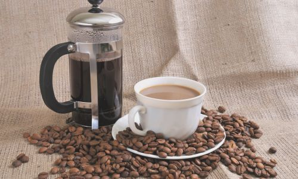

세계 최고의 커피 원두를 만나보세요
각기 다른 풍미와 아로마를 가진 프리미엄 커피 원두들의 이야기를 들려드립니다.
프리미엄 커피 원두
아라비카 (Arabica)
부드럽고 달콤한 맛과 향이 특징인 세계에서 가장 인기 있는 원두
원산지: 에티오피아
풍미: 달콤함, 과일향
로부스타 (Robusta)
강한 쓴맛과 높은 카페인 함량으로 에스프레소에 많이 사용
원산지: 아프리카
풍미: 쓴맛, 견과류향
리베리카 (Liberica)
독특한 스모키한 풍미와 과일향이 특징인 희귀한 원두
원산지: 라이베리아
풍미: 스모키, 과일향
엑셀사 (Excelsa)
신맛과 과일향이 강한 독특한 풍미의 특별한 원두
원산지: 동남아시아
풍미: 신맛, 과일향
커피의 역사
9세기
커피의 발견
에티오피아의 목동 칼디가 염소들이 빨간 열매를 먹고 활기차게 뛰어다니는 것을 보고 커피를 발견했다는 전설
15세기
예멘으로 전파
커피가 예멘으로 전해지며 최초의 커피 재배와 음용이 시작됨
17세기
유럽에 도입
베네치아 상인들을 통해 유럽에 커피가 전해지며 커피하우스 문화가 시작됨
18세기
신대륙 전파
남미와 중미 지역에 커피 재배가 확산되며 현재의 주요 생산지들이 형성됨
커피 추출 방법
에스프레소 (Espresso)
고압으로 짧은 시간에 추출하는 이탈리아 전통 방식. 진한 맛과 크레마가 특징
- 추출 시간: 25-30초
- 물 온도: 90-96°C
- 압력: 9bar
핸드 드립 (Hand Drip)
필터를 통해 천천히 물을 부어 추출하는 방식. 깔끔하고 부드러운 맛
- 추출 시간: 3-4분
- 물 온도: 90-96°C
- 분쇄도: 중간

프렌치 프레스 (French Press)
커피 가루를 우려내는 방식으로 진하고 풍부한 바디감이 특징
- 추출 시간: 4분
- 물 온도: 90-96°C
- 분쇄도: 굵음
콜드 브루 (Cold Brew)
찬물로 12-24시간 우려내는 방식. 부드럽고 산미가 적은 것이 특징
- 추출 시간: 12-24시간
- 물 온도: 상온 또는 차가운 물
- 분쇄도: 굵음